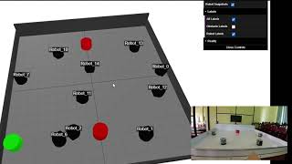
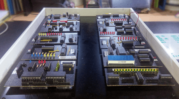

Zero Trash
Software project
See moreSoftware project
See more
Unified Project
See more
Software project
See more
Neural Network project
See more
Database Project
See more
Simple As Possible Computer
See moreMachine Learning Project
A supervised machine learning project developed to predict
credit approval decisions based on applicant data. The project involved training and
evaluating multiple classification models, tuning model parameters, and comparing their
performance to achieve the highest prediction accuracy on unseen test data.
* Preprocessed and cleaned the dataset for model training.
* Trained multiple supervised learning classification models.
* Evaluated model performance using training and test datasets.
* Tuned model parameters to improve prediction accuracy.
* Compared different models and selected the best-performing classifier based on
evaluation metrics.
Technologies
Python, Scikit-learn, Pandas, NumPy, Jupyter Notebook
Network Project
VOCE is a network application developed to demonstrate
packet transmission using IP multicast. The project enables efficient one-to-many
communication by transmitting data packets from a single sender to multiple receivers
simultaneously over a multicast network.
* Developed a multicast-based application for packet transmission.
* Implemented one-to-many communication using IP multicast.
* Configured multicast groups for packet distribution.
* Tested packet transmission and reception between multiple network nodes.
* Evaluated the reliability of multicast communication in a local network
environment.
Technologies
Java, Java Networking, IP Multicast, UDP, Socket Programming
Software project
A MIPS assembly language simulator developed to emulate the
execution of MIPS instructions in a software environment. The project demonstrates the
fundamentals of computer architecture by simulating the fetch, decode, and execute
stages of assembly-level instructions, allowing users to observe program execution and
register updates.
* Developed a simulator to execute MIPS assembly instructions.
* Implemented instruction fetching, decoding, and execution mechanisms.
* Simulated register and memory operations based on MIPS architecture.
* Displayed instruction execution results and register state changes.
* Tested the simulator using sample MIPS assembly programs to verify correctness.
Technologies
Java, MIPS Assembly, Computer Architecture, Object-Oriented Programming
Software Project
A multithreaded client-server application developed to
simulate a real-time stock auction system using TCP/IP socket programming. The project
demonstrates concurrent client handling, bid processing, and synchronized auction
management while enabling multiple users to participate in auctions simultaneously.
* Developed a multithreaded server to handle multiple client connections concurrently.
* Implemented TCP/IP socket communication between the server and clients.
* Designed auction logic for bid submission, validation, and winner selection.
* Applied thread synchronization techniques to ensure safe access to shared auction
data.
* Tested and optimized the application for reliable concurrent operation.
Technologies
Java, Socket Programming, Multithreading, TCP/IP, Concurrency, Object-Oriented
Programming (OOP), Git
Software Project
A multithreaded application developed to visualize
mathematical fractals by performing parallel computations. The project demonstrates the
use of concurrency to improve rendering performance while generating complex fractal
patterns such as the Mandelbrot and Julia sets.
* Implemented fractal generation algorithms using complex-number calculations.
* Applied multithreading to improve rendering efficiency.
* Developed a simple graphical interface for fractal visualization.
* Implemented configurable rendering parameters such as iteration count and zoom level.
* Explored concurrent programming concepts, thread synchronization, and performance
optimization.
Technologies
Java, Multithreading, Concurrent Programming, Object-Oriented Programming
Hardware Simulation
A hardware simulation project that implements the
gate-level architecture of a simple computer using the behavioral modeling features of
Verilog HDL. The project demonstrates the design, simulation, and verification of
fundamental digital components and their integration into a functional computing
system.
* Developed digital hardware modules using Verilog HDL behavioral modeling.
* Implemented fundamental logic components, including registers, arithmetic and logic
units (ALUs), multiplexers, and control logic.
* Integrated individual modules to simulate the operation of a simple computer
architecture.
* Performed functional simulation and verification using testbenches.
* Validated the correctness of the design through waveform analysis and debugging.
Technologies
Verilog HDL, Digital Logic Design, Behavioral Modeling, Hardware Simulation,
Testbenches, Computer Architecture
Who Is Speaking is a basic speaker identification application developed using MATLAB to recognize speakers based on their voice signals. The system processes recorded speech samples using fundamental digital signal processing techniques and compares the extracted voice characteristics with reference data stored in Microsoft Excel to identify the speaker. The project demonstrates the practical application of signal analysis, and data comparison techniques for basic speaker recognition and was validated using multiple recorded voice samples. * Developed a MATLAB-based speaker identification application. * Processed and analyzed voice signals using basic signal processing techniques. * Stored and managed reference voice data using Microsoft Excel. * Implemented speaker comparison and identification logic. * Tested and validated the system using recorded voice samples. Technologies MATLAB, Microsoft Excel, Digital Signal Processing (DSP)
MatLab and Arduino Based Game
An interactive two-player Tic Tac Toe game developed using
MATLAB and Arduino, combining software and hardware to create a real-time gaming
experience. The system enables players to interact with a physical interface while
MATLAB processes game logic, validates moves, and determines the winner.
* Developed the game logic for a two-player Tic Tac Toe application.
* Integrated Arduino hardware with MATLAB for real-time communication and gameplay.
* Designed a user interface for player interaction and game status visualization.
* Implemented move validation, win detection, draw conditions, and game reset
functionality.
* Tested and debugged both hardware and software components to ensure reliable
operation.
Technologies
MATLAB, Arduino, Embedded Systems, Serial Communication, Hardware Integration
A thermal-based flow meter developed to measure fluid flow
rate using the temperature gradient principle. The system determines the flow rate by
monitoring temperature changes between heated and sensing elements, providing a
non-mechanical and low-maintenance solution for flow measurement.
* Designed and assembled a prototype thermal flow sensing circuit.
* Integrated heating and temperature sensing elements for flow measurement.
* Performed calibration and experimental testing under different flow conditions.
* Analysed the relationship between temperature gradient and fluid flow rate.
* Evaluated sensor performance, sensitivity, and measurement accuracy.
Technologies
Temperature Sensors, Analog Electronics, Signal Conditioning, Data Acquisition, Embedded
Systems, Instrumentation, MATLAB, Hardware Prototyping